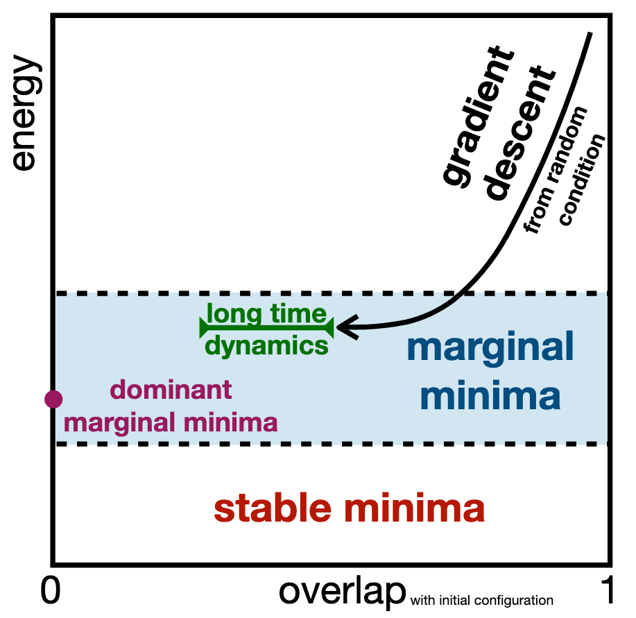

This project investigates the interplay between dynamics and statics in the mean-field p-spin spherical model. The focus was to explore dynamical phase transitions and how asymptotic states can retain memory of their initial conditions, challenging previous assumptions in glassy systems. The findings show that memory retention can occur even when the system starts from a completely random configuration, questioning the validity of the weak ergodicity breaking hypothesis.
